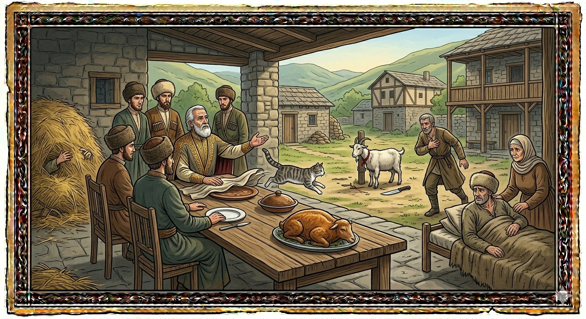

И.А. Дахкильгов. Хьехаме дувцарш - поучительные рассказы-притчи.
И.А. Дахкильгов. Хьехаме дувцарш - поучительные рассказы-притчи. Из ингушского фольклора.

Хьаьший бекъаш хилац
Пайхамарий замах Хьумазати Лумазати яхаш ши воша хиннав. Дукха жа хиннад царга. Ший эздешца цкъа накъах ваьнна водаш хиннав ИбрахӀам-пайхамар. Уж вежарий бахача цӀенгахьа дӀачубийрзаб уж. Шоашка хьоашалгӀа нах боагӀалга а дайна, Лумазат хола юкъе чуийккхав, хӀаьта Хьумазат, цамогаш волчогӀа кеп а оттаяь, цӀагӀа дӀавижав. Цар цӀенга хьатӀаэттар ИбрахӀам-пайхамар. Духьала енача Хьумазата сесаго, ший мар цамогаш ва, аьннад. ХӀаьта а пайхамари цун оздойи цӀапӀа чу баьнна, шуна хайшаб. ГӀатта дийзад Хьумазата. Хьаьшашка моаршал а хаьтта, коа а ваьнна, хьаьшашта фу йийча бакъахьа я-те, яхаш, уйла еш хиннав из: жий бийча, хургболча Ӏаьхарах воал; ка бийча, жа дахкаргдац, яхаш. Коа гӀолла додаш циск дайнад. Из дувргда-кха аз, цох Ӏаьхарг ба аргда, царна из циск долга ховрг а дац, аьнна, из дӀадийнад цо. Сесаго кийчадаьд. Шу оттадича, цох шекваьннав ИбрахӀам-пайхамар. Шуна тӀа кулгаш ӀотӀа а дехка, дуӀа даьд цо. Тамаш йолаш хӀама хилар: дийнденна циск ийккха дӀадахар. Циггач хайра Хьумазата ше волча Даллас дакъа денна нах баьхкалга. Коа а ведда, устагӀа бийнаб цо. Дукха ца говш кийч а баь, шуна оттабаьб. Дуача хӀамах кулг тоханзар пайхамарои цун эздеши. ИбрахӀам-пайхамара аьлар: - Тхо цхьа моллагӀа нах да аьнна хийтта, хьа воша хола юкъе ийккхар, хӀаьта Ӏа тхона циск оттадир. Далла дакъа денна нах тхо долга хайча, устагӀа а бийна, из оттабир Ӏа тхона. Дикеи вои хьаьший къестабеча цӀагӀа ирази беркати хургдац. Уж доацача, сои са оздойи шунах мотт тохаш дац. Уж дӀабахар. Дукха ца говш вежарий а къийлуш, къийлуш, боахамах баьлар.
РУССКИЙ
Гостей не разделяют
Жили два брата - Хумазат и Лумазат. Это были времена пророков. У братьев было много овец. Со своими сподвижниками ехал как-то пророк Ибрахим. Они завернули к братьям. Те, чтобы не тратиться на гостей, поступили так: Лумазат нырнул в копну, а Хумазат лег, притворившись больным. Пророк Ибрахим подъехал к дому. Навстречу им вышла хена Хумахата и сказала, что он болен. Пророк и его сподвижники все же вошли и сели за стол. Хумазат встал, приветствовал гостей и вышел во двор, думая, что бы такое зарезать для гостей. Овцу зарезать - ягненка лишиться, барана зарезать - овцы останутся непокрытыми. Через двор шла кошка. "Зарежу-ка я ее, они ничего не узнают, скажу, что это ягненок", - решил Хумазат и зарезал кошку, а его жена приготовила ее. Когда подали на стол, пророк Ибрахим засомневался в пище. Он положил на нее руки, произнес молитву, и чудо свершилось. Кошка ожила и убежала. Понял Хумазат, что у него в гостях святые люди, выбежал во двор и зарезал барана. Вскоре его приготовили и подали на стол. Пророк Ибрахим и его сподвижники не дотронулись до пищи. Пророк Ибрахим сказал: "Когда вы думали, что мы какие-то прохожие, брат твой спрятался в копну, а ты подал кошку. Узнав, что мы отмечены Всевышним, вы зарезали и подали барана. В доме, где гостей разделяют по степеням, счастья и благодати не будет. А где их нет, там ни я, ни мои сподвижники пищи не вкусят". Они встали и уехали. Братья вскоре вконец обнищали.
ENGLISH
Guests are not to be treated differently
There were two brothers - Humazat and Lumazat. These were the days of the prophets. The brothers had many sheep. One day, the Prophet Ibrahim was travelling with his companions. They stopped by to visit the brothers. Not wanting to spend money on their guests, the brothers devised a plan: Lumazat dived into a haystack, whilst Humazat lay down, pretending to be ill. Prophet Ibrahim rode up to the house. Humazat's wife came out to meet them and said that he was ill. The Prophet and his companions went in anyway and sat down at the table. Humazat stood up, greeted the guests and went out into the courtyard, wondering what he might slaughter for them. If he slaughtered a sheep, he would lose a lamb; if he slaughtered a ram, the ewes would be left unmated. A cat was walking across the courtyard. 'I'll slaughter it; they won't find out. I'll say it's a lamb,' decided Humazat, and he slaughtered the cat, whilst his wife prepared it. When the food was served, the Prophet Ibrahim had his doubts about it. He laid his hands upon it, said a prayer, and a miracle occurred. The cat came back to life and ran away. Humazat realised that he had holy men as guests, ran out into the courtyard and slaughtered a ram. Soon it was cooked and served. Prophet Ibrahim and his companions did not touch the food. Prophet Ibrahim said: "When you thought we were mere passers-by, your brother hid in a haystack, and you served the cat. Upon realising that we are marked by the Most High, you slaughtered and served the ram. In a house where guests are treated differently according to their status, there will be no happiness or grace. And where these are lacking, neither I nor my companions will taste the food." They rose and departed. The brothers soon fell into utter poverty.
НОХЧИЙН
Хьаьший ца декъало
Вехаш хилла ши ваша - Хумазат а, Лумазат а. Пайхамарийн хан яра из. Вежаршна дукха уьстагӀий хилла. Шен накъосташца воьдура цхьана хана Ибрахим-пайхамар. Уьш вежаршна тӀе верзийна. Царна хьаьшашка ахча даккха ца лаьара, цундела дира иштта: Лумазат ялтин Ӏам чу чуиккхина, Хумазат виж хилла, цомгуш хеташ. Ибрахим-пайхамар цӀана тӀе вирзина. Царна дуьхьал йели Хумазатан зуда, аьлла цомгуш ву иза. Пайхамар, цуьнан накъосташца, чувахна, шун тӀе хайна. Хумазат гӀаьттина, хьаьший тӀаэцна, ковха ара а ваьлла, ойла йира, хӀун йиина хьаьшашна. УьстагӀ йиича, бежан дуьсур дац; берг йиича, уьстагӀаш ерзана дуьсур ду. Ков-керта тӀехула циск лелаш хилла. «Иза йийр ду ас, царна хӀумма а хуур дац, из бежан ду ас олу», - аьлла ойла йина Хумазата, циск йиина, шен зудчо и кечдина. Шун тӀе диллачохь, Ибрахим-пайхамар кхача чух шеко хилла. Цо шен кулгаш кхача тӀе диллина, ламаз а йина, ца хеза хӀума хилла. Циск дийна хилла, идда дӀаяхна. Кхийтина Хумазат, шайна хьошалгӀа цӀена нах хилла, ковха ара а ваьлла, берг йиина. Из кечдина шун тӀе диллачохь, Ибрахим-пайхамар а, цуьнан накъостий а, кхача тӀе кулгаш ца хьаькхна. Ибрахим-пайхамаро аьлла: «Шоьга хетача хана, тхо моллагӀа некъахой ду аьлла, хьан вешас ялтин Ӏам чу чуиккхира, ахьа циск диллира. Хааделча, тхо Далла белгал бина нах ду, ахьа берг йиина диллира. И цӀахь, хьаьший декъача, ирс а беркат а хир дац. Ткъа хьаьший ца декъачохь бен, со а сан накъостий а кхача чу ца кхета». Уьш гӀоьттина, дӀаваьхна. Вежарий, гена ца яьлла хан, чӀогӀа къенвели.
ПОГОВОРКИ
Воча фусамдас бийда дулх увттаду. Плохой хозяин ставит на стол недоваренное мясо (чтобы меньше съели). A bad host serves undercooked meat, so guests eat less. Вон хӀусам-дас буьйда жижиг хӀоттадо.Долашехьа “дац” аьннар шайтӀага кхоач. Если, имея что-то, скажешь: “Его нет”, то оно достается шайтану. If you say "I have none" of something you actually have, it ends up belonging to the devil. Долушехь "дац" аьлларг шайтӀана кхочу.Дукха лаьтта худар мистаденнад, дукха дийца хӀама дайденнад. Долго стоявшая каша прокисла, долго обговариваемое дело не выгорело. Porridge left standing too long turns sour; a plan discussed too long comes to nothing. Дукха лаьттина худар мустаделла, дукха дийцина хӀума дайделла.Къаьра биачох дув баханза Ӏец. За ложную клятву бог наказывает. God punishes those who swear falsely. Къара дуй биъначух дуй баханза Ӏац.Мецачоа говза хабараш эшац – шу хьаоттаде. Не нужны голодному твои умные речи – ты ему стол накрой. The hungry man doesn't need clever talk — set the table for him instead. Мецачун говза хабарш эшац – шун хӀоттаде.Наха дезаш аьнна дош, аьнна дуккха ха яьлча а дунен чу дах. Наха ца дезаш аьнна дош, дукха ха яьлалехьа дӀадоал. Сколь времени бы ни прошло, а сказанное любезное народу слово будет живо; но вскоре бесследно исчезает слово, противное народу. However much time passes, a word pleasing to the people will live on; but a word displeasing to the people vanishes without a trace. Нахан дезаш аьлла дош, аьлла дукха хан йаьлча а дуьненчохь деха. Нахан ца дезаш аьлла дош, дукха хан йалале, дӀадолу.“Хий дезе, виза ва; хий ца дезе, бага марха да”, - хьаьшах аьннад цӀаьрматача саго. “Попросит (гость) воды напиться – значит сыт, не попросит – значит уразу держит”, - сказал жадный хозяин. "If he asks for water, he's full; if he doesn't, he must be fasting," said the stingy host of his guest. "Хи дезахь, вуьзна ву; хи ца дезахь, багахь марха ду" - аьлла сутарчу стага.Хьаьша веча, воча фусам-нанас бераш делхадаьд. У плохой хозяйки всегда дети плачут, когда приходит гость. In a bad hostess's home, the children always cry when a guest arrives. Хьаша веъча, вочу хӀусам-нанас бераш делхадо.Хьаьша дӀаваха тохавелча, фусам-да кхы а чӀоагӀагӀа гӀулакхаца хул. Когда гость соберется уходить, хозяин становится еще любезнее. As the guest prepares to leave, the host becomes even more gracious. Хьаша дӀаваха тохавелча, хӀусам-да кхин а чӀоагӀах гӀиллакхца хуьлу.Хьаьшана дикагӀа хет шун тӀа ханнахьа оттадаь тух-сискал, хьийга енача котамал. Гость предпочитает хлеб-соль сразу же, чем долго ожидаемую курятину. A guest values bread and salt served right away more than long-awaited chicken. Хьашана диках хета шун хеннахь хӀоттина туьх-сискал, хьега йезначу котамал.Хьаьший бага хьежаш вагӀаргва цӀаьрмата фусам-да. Жадный хозяин глаз не сводит со рта гостя. The stingy host will keep his eyes fixed on the guest's mouth. Хьешан бага хьоьжуш вехар ву сутара хӀусам-да.Ши пхьор даа венна кӀец меца дӀавижав. Задумал “кец” (шалопай) поужинать в двух местах, но так и лег спать голодным. The freeloader who planned to dine at two places went to bed hungry instead. Ши пхьор даа ваьлла кӀец меца дӀавижна.